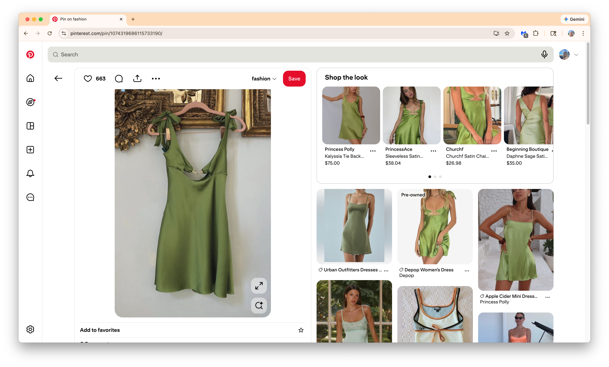
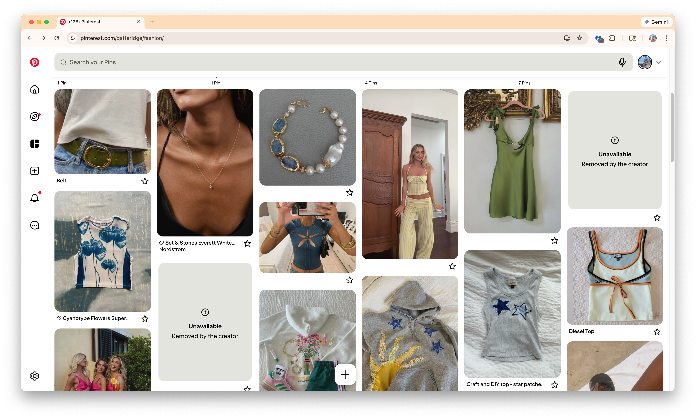
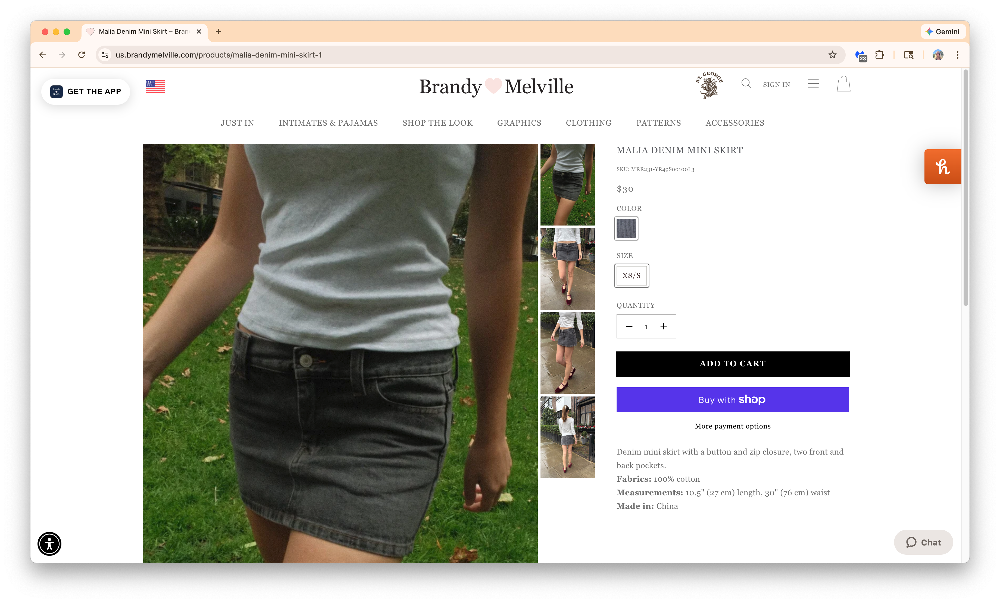
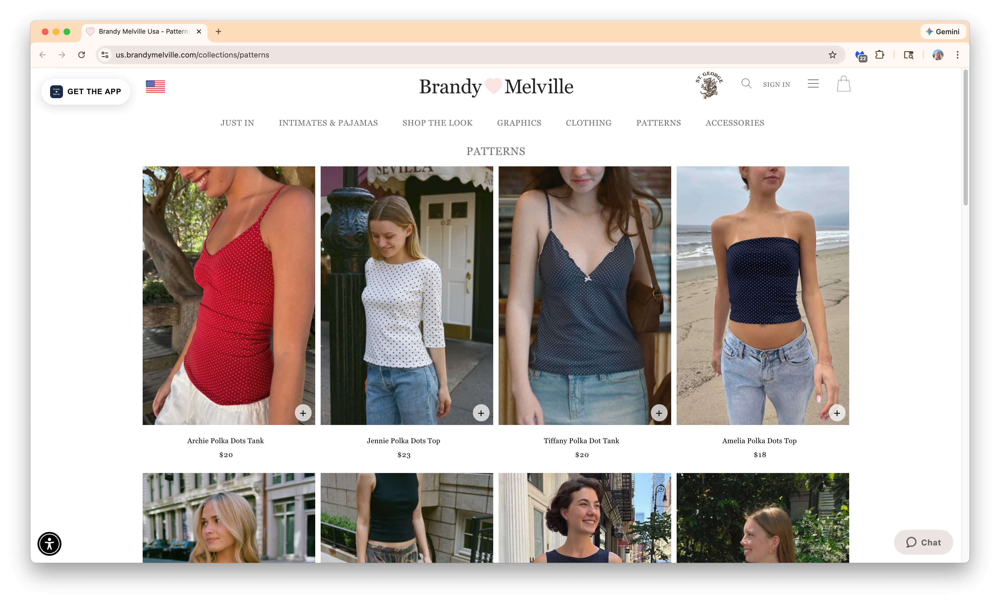
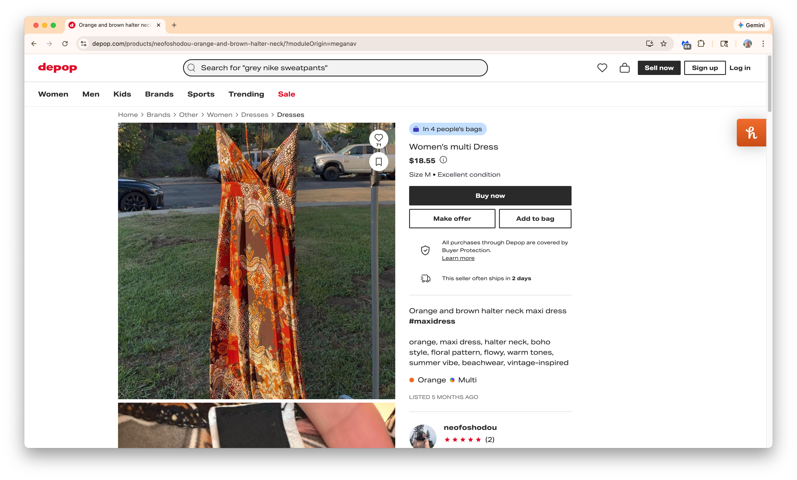
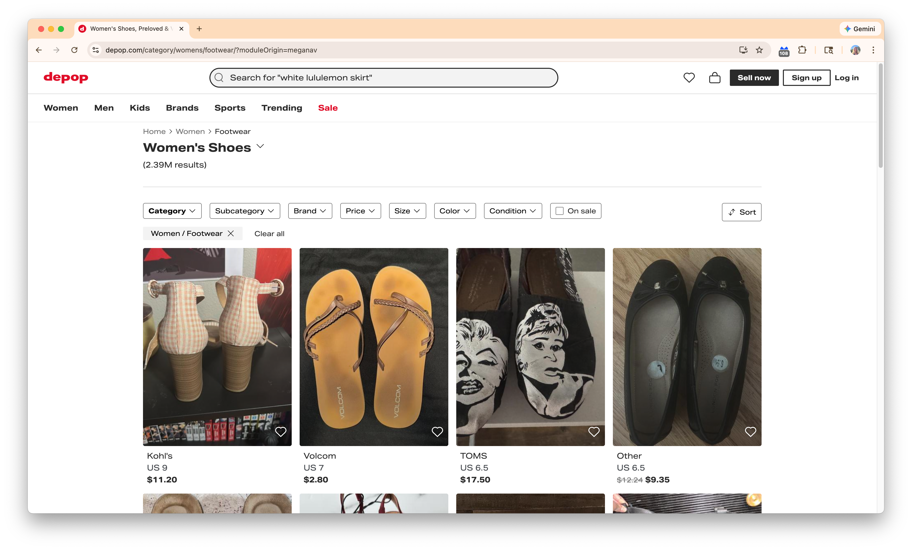

BLØD
BLØD is a curated thrift retail shop that specializes in soft, minimalist secondhand fashion. Focused on clean silhouettes, neutral tones, and timeless pieces, BLØD offers an elevated resale experience for style-conscious shoppers who value both sustainability and aesthetic. With a carefully edited selection and a calm, Scandinavian-inspired atmosphere, BLØD blends the ease of online inspiration with the tactile experience of in-store shopping.
The people who use the BLØD website are primarily young women (around 18–30) who are style-conscious and drawn to minimalist, Scandinavian-inspired fashion. They appreciate curated, secondhand clothing that feels clean, soft, and timeless rather than trendy or chaotic. These users are often students, creatives, or young professionals who value sustainability but also care deeply about aesthetic and quality.
The main goal is to find timeless, high-quality items that fit their personal aesthetic while shopping sustainably. Many also use the site for inspiration, checking new arrivals and planning visits to the physical store.






Welcome to BLØD
[Image of store owners laughing and waving]